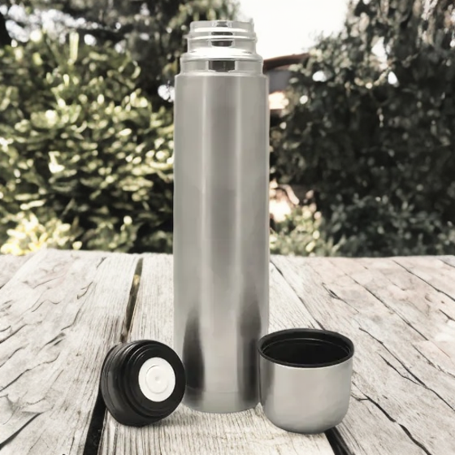

Termo Bala
Termo bala, acero inoxidable, capacidad 1lt.

Termo mate-system
Termo Stanley mate-system. Capacidad 1.2Lts.
Termo bala, acero inoxidable, capacidad 1lt.
Termo Stanley mate-system. Capacidad 1.2Lts.